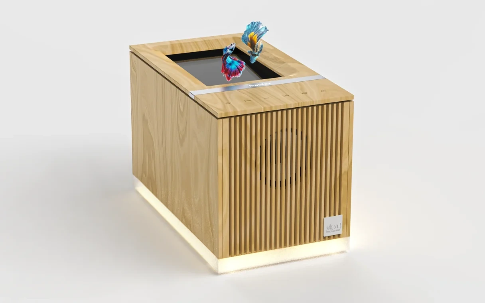

浮光樂影・浮空投影音樂盒
將音樂與浮空影像，收進木質箱體。
以台灣檜木機箱整合浮空光學機構、雙喇叭與觸控按鍵，讓音樂與影像成為居家擺件的一部分。軟體結合手機 BLE 內容控制、藍牙音箱功能與六種情境畫面，目前進行產品驗證。
開發範圍產品外觀與機構規劃、Android 播放端、手機 BLE 控制與軟硬體整合。

01 / ARCHITECTURE
光學、聲音與檜木機箱
在檜木機箱中配置光學、系統、雙喇叭與操作介面。
檜木與浮空光學機構
以台灣檜木設計機箱，整合頂部視窗與浮空光學機構。
系統與雙喇叭配置
在機箱內安排運算系統與雙喇叭，整合顯示與聲音模組。
觸控按鍵設計
在機箱頂部整合觸控按鍵，讓使用者直接操作產品功能。
待補圖片：檜木機箱、浮空光學、雙喇叭與觸控配置
16:10 · 建議 1920 × 1200 px
02 / IMPLEMENTATION
手機控制、音樂與情境播放
軟體串接手機內容控制、音樂播放與六種顯示情境。
手機 BLE 內容控制
手機透過 BLE 控制喇叭端內容，切換不同的顯示情境。
藍牙音箱功能
提供藍牙音箱功能，讓手機音樂在木質音樂盒中播放。
六種情境畫面
Android 播放端提供六種情境畫面，呈現音樂與視覺內容。
待補圖片：手機 BLE 控制、藍牙音箱與六種情境
16:10 · 建議 1920 × 1200 px
03 / OUTCOME
產品整合進度與驗證重點
目前已整合產品硬體、播放端與手機控制，進行產品驗證。後續以實機確認浮空觀看效果、觸控操作、藍牙音樂播放與情境切換；驗證結果與實機紀錄待補。
待補圖片：實機操作與產品驗證紀錄
16:10 · 建議 1920 × 1200 px